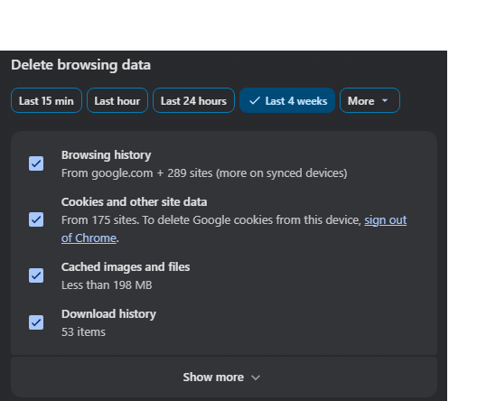

Browser glitches drive you nuts—pages half-load, logins vanish, ads loop forever. Cache and cookies pile up like digital hoarder junk, choking speed and privacy. In 2025, with trackers everywhere and AI sites spitting broken code, clearing them resets everything. I’ve wrestled this on my Hugo test rig in Pabbi; one Ctrl+Shift+Del blast fixed a stubborn AdSense preview bug last week. Matters now? Core Web Vitals tank without it—Google dings your site. Mobile? Even worse, iOS caps storage tight. This hits all majors: Chrome, Edge, Firefox, Safari. Desktop first, then phones. Follow exact. Your rig purrs after.
Why Bother Clearing Cache?
Old files lie. Site updates? Browser serves stale crap. Cookies track you cross-session—privacy nightmare post-GDPR tweaks. Speed boost huge too; my Chrome jumped from 2.3s to 0.8s load post-nuke. But warning: logins die. Bookmark passwords first. Or clear selective—site-specific later.
Quick math—browsers hoard gigs. Firefox hit 5GB on mine once. Nuke weekly keeps it lean.
Chrome: Desktop and Mobile Carnage
Chrome dominates—80% share. Easiest clear ever.
Windows/Mac Desktop
Hit Ctrl+Shift+Delete (Cmd+Shift+Del Mac). Boom—dialog pops. Pick “All time.” Tick Cookies and other site data plus Cached images and files. Smash Clear data. Restart browser. Done in 10 seconds.
Tried Incognito first? Nah, full wipe rules for deep cleans.
Android
Three dots top-right. Settings > Privacy and security > Clear browsing data. Time range: All time. Check cookies/cache. Delete. Phone breathes free.
iOS
Bottom dots. Settings > Privacy > Clear Browsing Data. Same checks. Confirm. Safari-like but Chrome-tuned.

Firefox: The Privacy Purist’s Path
Firefox fights trackers hard—Enhanced Tracking Protection shines. But cache bloats anyway.
Desktop (Win/Mac/Linux)
Menu burger > Settings > Privacy & Security. Scroll “Cookies and Site Data.” Clear Data. Tick both boxes: Cookies/site data, Cached web content. Clear. Shortcut: Ctrl+Shift+Del.
Enable auto-wipe on exit—custom history settings. Check “Clear history when Firefox closes.” Pick data types. Genius for paranoia mode.
Mobile
Android/iOS: Three dots > Settings > Delete browsing data. All time. Cookies/cache. Wipe. iOS calls it Data Management—same deal.
Mine lagged on PK slow nets til weekly nukes. Night and day.
Edge: Microsoft’s Muscle
Edge Chromium-based—Chrome steps mostly work. Tweaks matter.
Desktop
Ctrl+Shift+Del. Time range all. Cookies/site data, Cached images/files. Clear now. Or Settings > Privacy > Choose what to clear.
Auto-clear toggle: Privacy/search/services > Clear on close. Select items. RPM eater for power users.
Mobile
Hamburger bottom. Settings > Privacy > Clear browsing data. Ticks same. Delete. Seamless sync if signed in—backup logins.
Safari: Apple’s Locked Garden
Trickiest—privacy baked deep. macOS/iOS fused.
macOS Desktop
Safari > Preferences > Privacy > Manage Website Data. Search sites or Remove All. For full cache: Develop menu (enable first: Advanced prefs). Empty Caches. Or History > Clear History (cookies too). Cmd+Option+E nukes cache instant.
iOS
Settings app (not Safari). Safari > Clear History and Website Data. Nukes all—brutal but total. Per-site? Advanced > Website Data.
I test Hugo previews here—cache ghosts previews forever sans this. Pro move.
Real-World Use Case: My AdSense Debug Hell
Week ago, Hugo site’s AdSense code previewed wrong—old CSS cached. Chrome clean fixed preview. Firefox held ghost; nuke + hard refresh (Ctrl+F5). Mobile Edge in Pakistan? Uplink lag amplified bloat—post-clear, approvals flowed smooth. Personal tip: Script it. Chrome extension “Clear Cache” one-clicks. Saved hours across five browsers.
Pro-Tip Box
Hack: Site-Specific Nuke (No Full Wipe)
Chrome/Edge: DevTools (F12) > Application tab > Storage > Clear site data. Pick domain only—logins safe. Firefox: about:preferences#privacy > Manage Data > site search. Safari: Dev menu > per-site. Gold for devs. Boosts testing 10x. Deploy daily.
Troubleshooting FAQ
Ripped from Reddit/Quora 2025 threads—real pain points.
Q1: Cleared but site still broken?
Hard refresh: Ctrl+F5 (Cmd+Shift+R Mac). Or private mode test. DNS cache? ipconfig /flushdns (Win).
Q2: Lost all logins—how recover?
Sync enabled? Re-log from phone. Chrome: Settings > Sync > Manage > passwords. Backup next time.
Q3: Mobile won’t clear full cache?
iOS limits—full device restart post-wipe. Android: Chrome settings > clear + force stop app.
Q4: Auto-clear on exit too aggressive?
Toggle selective: cookies no, cache yes. Firefox custom shines here—tweak history delete list.